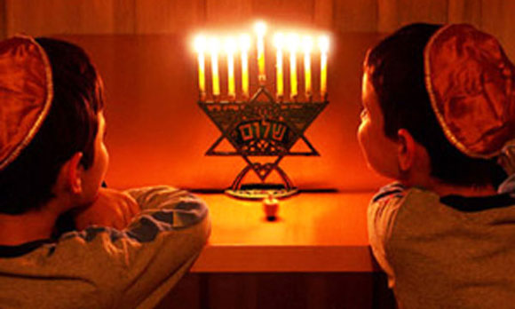
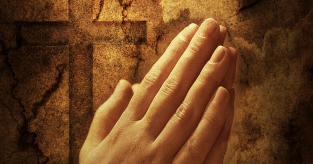

Algunas religiones que la practican son:
Testigos de Jehová:
Los miembros de esta religión celebran la Cena del Señor con pan sin levadura y vino en sus congregaciones. A esta fracción del pan solo pueden acercarse las personas ungidas –según sus escritos– aquellos que tengan la esperanza de ir al cielo.
Los judíos:

Que no creen en Jesús como su Salvador, celebran el matza, una cena que consiste en hierbas con sabor amargo y pan sin levadura (ácimo) en forma de galleta. El sabor amargo recuerda la esclavitud que vivió el pueblo de Israel ante los egipcios; y el pan sin levadura, según las escrituras bíblicas, simboliza la humildad de esta comunidad.
Adventistas:
En el sentir de los adventistas, la Semana Santa es la conmemoración de la pasión de Cristo; sin embargo, los seis días los trabajan normalmente, además, no tienen prohibición para ingerir alimentos, aunque tienden a ser vegetarianos.
Los Católicos:

Las tradiciones católicas durante la Semana Mayor incluyen procesiones con diferentes imágenes de Cristo, la Virgen y los santos; vía crucis en los templos, por las vías de las ciudades o en cerros tutelares, y varias ceremonias especiales.
Y la lista continúa, ahora en pleno siglo XXI, existen muchas religiones en Bogotá, en todo el país y muchas más en el mundo; unas más reconocidas que otras, pero todas sin duda alguna, celebran la semana santa muy a su manera.
{kind=link}